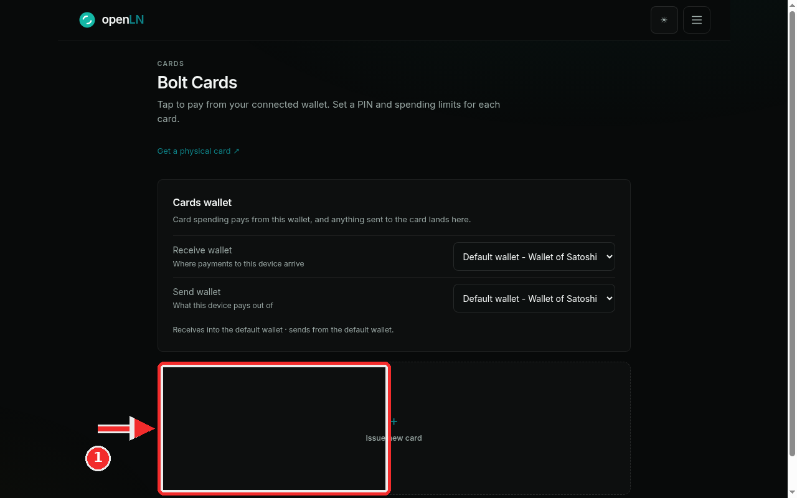
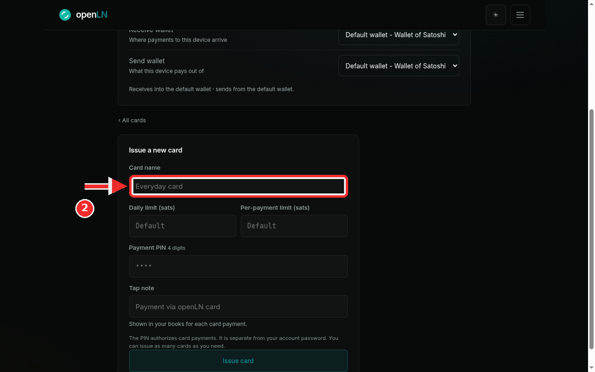
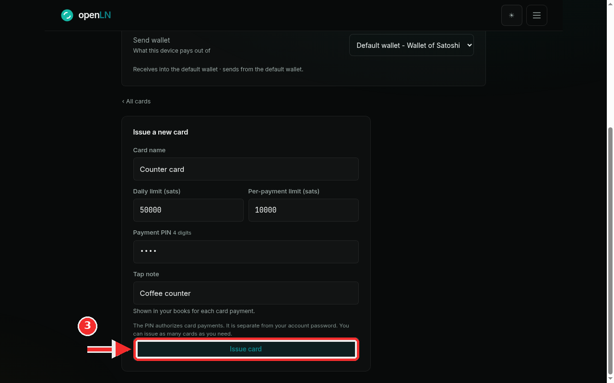
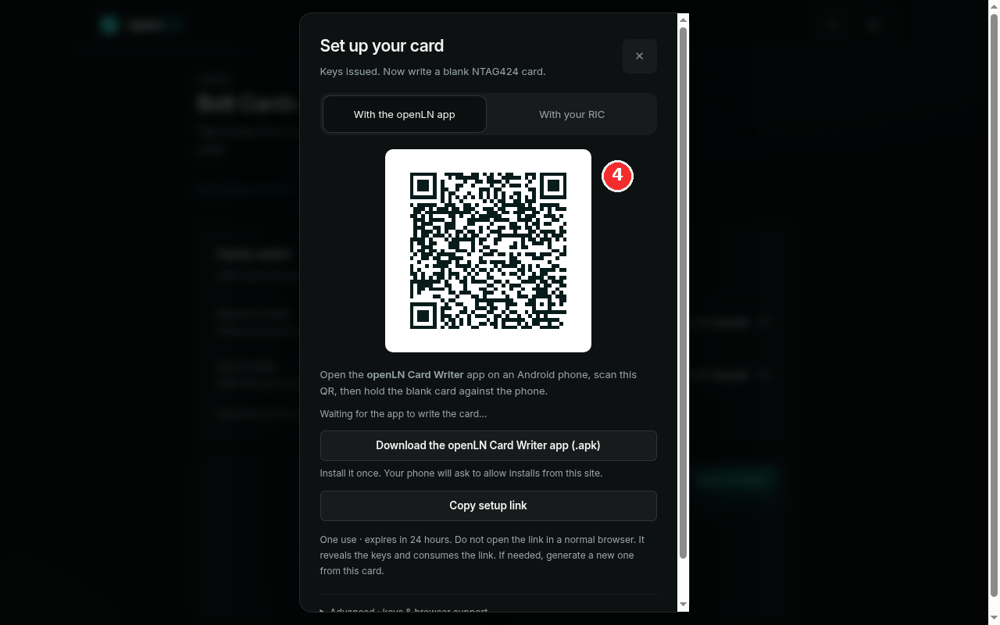

How to issue a new Bolt card
Issuing is the account side of the job. It creates the card's record in openLN with its name, spending limits, payment PIN and the keys the physical chip will carry. No card touches anything yet. The whole thing happens in the app and takes under a minute, and the one thing worth having ready is a blank NTAG424 card for the writing step, which is the next guide.
- You are signed in to your openLN account (any device, phone or computer).
- You have blank NTAG424 cards, or you know where they come from. The card shop sells them, and the Get a physical card link at the top of the Cards page points there. Issuing does not need the card in hand; a blank is only touched in the next guide.
- You know which wallet the cards should spend from. Cards pay from the Cards wallet, and payments settle straight to your wallet (step 1 explains where that is set).
- Nothing is charged while you set a card up, and no funds move.
Open the Cards page and tap the Issue tile
Open the menu and choose Cards. The page is headed Bolt Cards, with the summary line "Tap to pay from your connected wallet. Set a PIN and spending limits for each card."
At the top sits the Cards wallet block. This is the money side of every card on the page: in openLN's words, "Card spending pays from this wallet, and anything sent to the card lands here." The two pickers, Receive wallet and Send wallet, both start on your default wallet (the screenshot shows Default wallet - Wallet of Satoshi). If you keep card money in its own wallet, point them there before you issue. Either way the sats stay yours: card payments settle straight to your wallet, and openLN never takes custody of them.
Below the wallet block is the tile grid. On an account with no cards yet it holds a single tile, + Issue new card, which the red mark in the screenshot points at. Tap it.
Issue as many cards as you need. Each tap creates its own card, with its own limits, PIN, tap note and keys, so a shop can run one card per till, one per staff member, or a spare, without them interfering with each other. Each one is written to its own blank NTAG424 in the next guide.

Fill in the card form
The Issue a new card form has five fields and one button. Read the labels first, then type:
Card name. A label for you, up to 64 characters. It shows on the card's tile and detail page, so pick something you will recognize at a glance. The red mark in the screenshot sits on this field.
Daily limit (sats) and Per-payment limit (sats). The most this card can spend in one day and the most it can spend in a single tap, both in whole sats. Left empty, each field uses the account default, which is what the grey Default in the boxes means. Type a number to override the default for this card only.
Payment PIN 4 digits. Exactly four digits. The PIN authorizes card payments at checkout, so a tap without it does not go through. It is separate from your account password, and it is separate from any send PIN you use for outgoing payments. Treat it like a password: pick digits you do not use anywhere else, and note them down, because the field will only ever show dots.
Tap note. A short line of text, up to 120 characters, shown in your Books next to every payment this card makes. The hint under the field says it plainly: "Shown in your books for each card payment." A note like "Coffee counter" makes bookkeeping easy, especially once you run more than one card. The hint under the form adds the rest: "The PIN authorizes card payments. It is separate from your account password. You can issue as many cards as you need."

Fill the example and press Issue card
Here is a worked example, the same one this guide uses throughout: card name Counter card, daily limit 50000 sats, per payment limit 10000 sats, a 4-digit PIN of your choosing (the field shows only dots, never the digits) and the tap note Coffee counter. In plain terms that is a card that can spend at most 50000 sats in a day, at most 10000 sats per tap, and whose payments are tagged "Coffee counter" in your books.
When the form looks right, press the Issue card button at the bottom, which the red mark in the screenshot points at. openLN stores the card with its limits, PIN and keys in one go. Nothing is written to any chip yet, and the card cannot take a payment before the next step.

Meet the Set up your card dialog
The moment the card is created, openLN opens the Set up your card dialog, the one in the screenshot. It starts with the line "Keys Issued. Now write a blank NTAG424 card." In other words: the record exists, its keys are ready, and the next job is to put them on a blank chip. The red mark in the screenshot sits beside the setup QR.
Everything the writing step needs lives in this dialog: the setup QR, the two tabs With the openLN app and With your RIC, the Download the openLN Card Writer app (.apk) button, the Copy setup link button, and the advanced section at the bottom. You can close the dialog whenever you like; reopen it later from the card's row in the list.
Meanwhile the card appears in the list with a READY TO WRITE badge. Read that as: the record is done, and it is waiting for a blank card. It cannot take a payment until it is written. The setup link inside the dialog is one use and expires after 24 hours, so write the card while you have one to hand.
Writing is the next guide: How to write a card (openLN app or RIC) covers both lanes, phone and RIC, step by step.

- The PIN is its own code. It authorizes card payments at checkout, card by card, and it is separate from your account password. You can change or remove it later from the card's page (manage a card).
- Limits are per card. The daily limit caps a day of spending, the per payment limit caps one tap, both in sats. Leave a field empty to use the account default, and edit the numbers whenever your takings say so.
- Issuing does not reserve hardware. A card can sit at READY TO WRITE for as long as you need; it only becomes payable once a blank NTAG424 has been written with it. Keep blanks in a drawer and issue the next card when you actually need it.
- Your sats stay yours. Card spending pays from the wallet set in the Cards wallet block, and card payments settle straight to your wallet. openLN never takes custody of your funds.